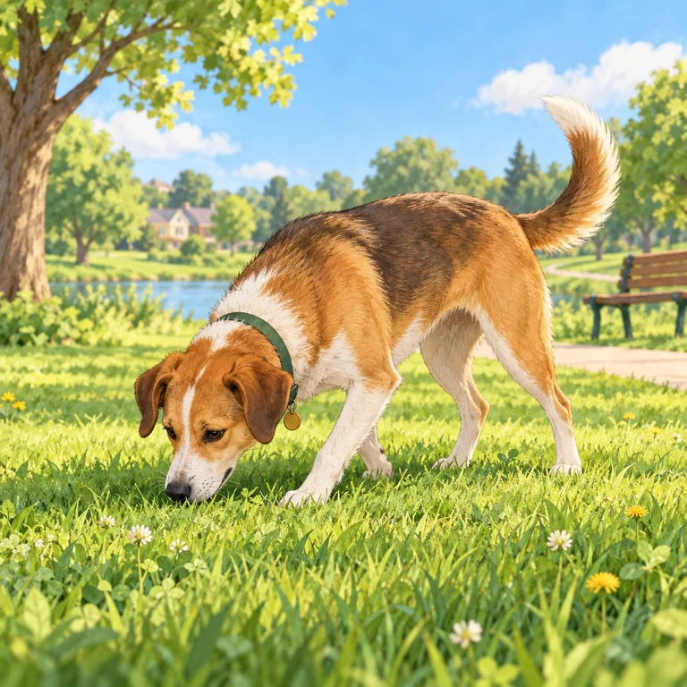
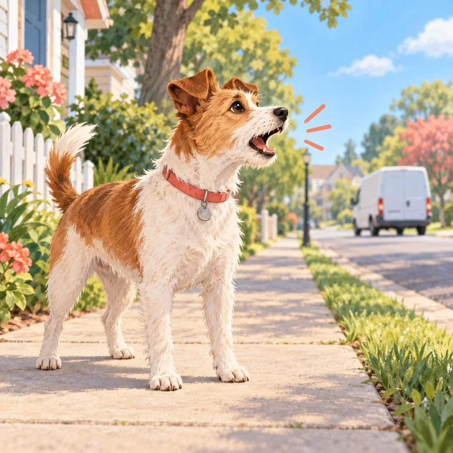
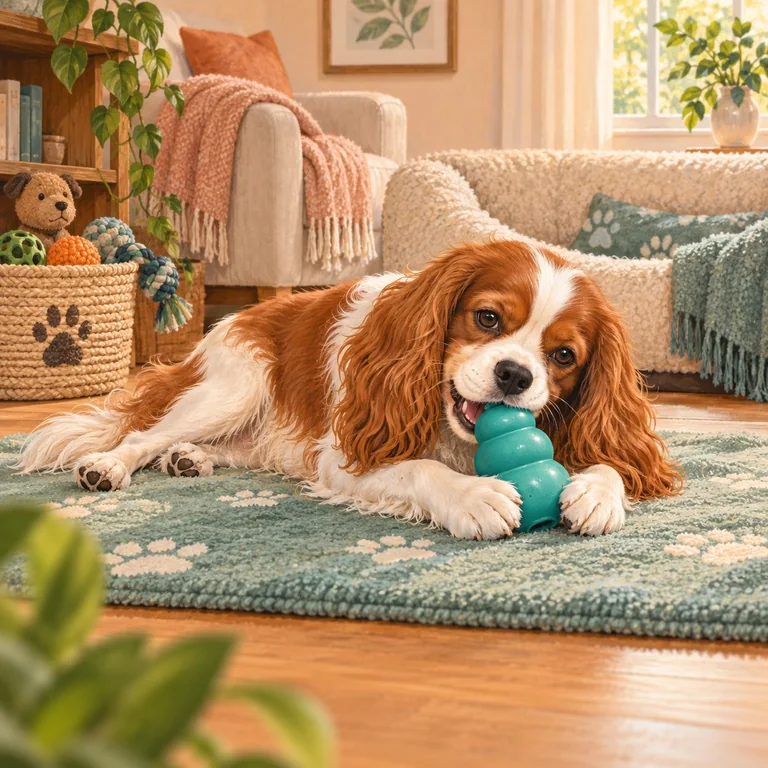
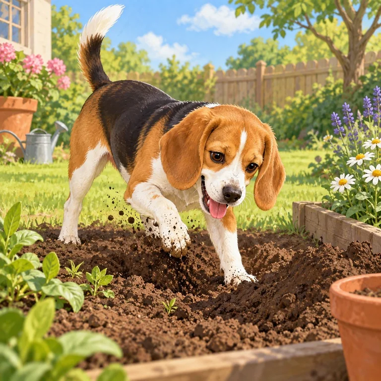
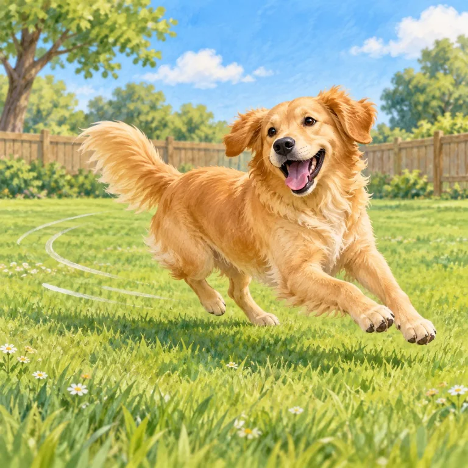
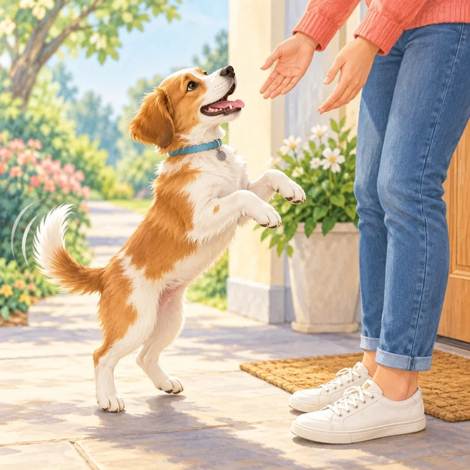
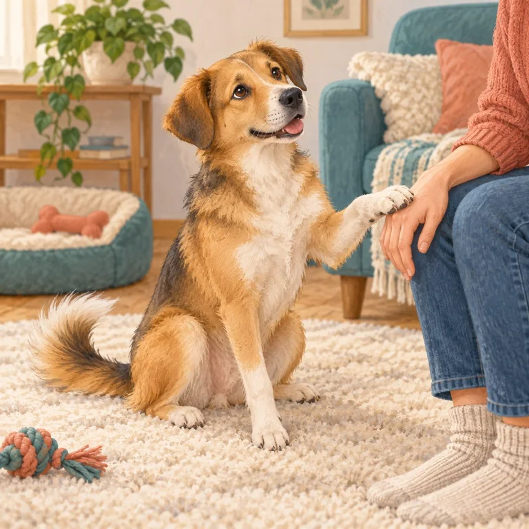
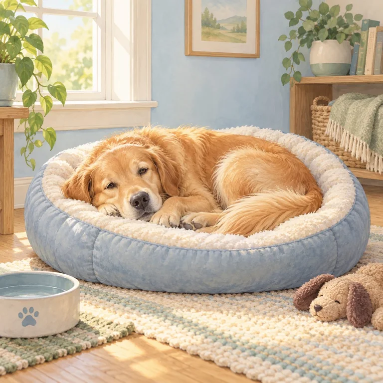
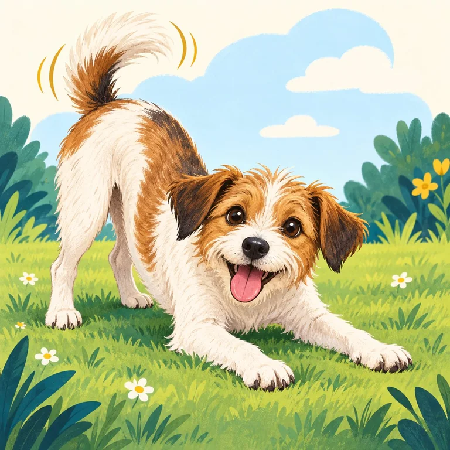

Sniffing & exploring
Nose work helps dogs learn about the world and can be calming enrichment.
Try: Give sniff walks time instead of rushing every stop.
Notice: Sudden frantic sniffing can also be a way to release pressure.
Read the signs
- Often ordinary: relaxed sniffing with an easy pace, loose muscles, and the ability to move on.
- Check the context: repeated ground-sniffing after a startling event may be a displacement behavior, not simple curiosity.
- Help: allow safe exploration; if your dog cannot disengage, create calm distance and see whether they recover.

Barking & vocalizing
Barks can mean alert, excitement, frustration, fear, or a request for help.
Try: Check distance, trigger, rhythm, and recovery before responding.
Notice: Punishment may silence a warning without changing the feeling.
Read the signs
- Look around the bark: trigger, distance, body tension, sound pattern, and what happens after it stops.
- Different patterns: a brief alert bark, repeated frustrated barking, and barking paired with retreat can have different causes.
- Help: calmly block the view or add distance; reward a check-in when your dog is able to respond.
- Get support: seek a veterinarian or qualified reward-based professional for a sudden change, panic, or escalating reactions.

Chewing & shredding
Chewing is normal exploration and can help a dog settle when the outlet is safe.
Try: Trade unsafe items for an appropriate chew—never chase or grab.
Notice: A sudden increase may point to boredom, stress, or discomfort.
Read the signs
- Match the outlet: offer a size-appropriate, durable chew and supervise to reduce choking or swallowing risks.
- Prevent rehearsal: put shoes, cables, and unsafe objects away; rotate a few safe options.
- If your dog has an item: invite a trade with something better instead of grabbing or chasing.
- Health check: new, intense, or hard-to-interrupt chewing can warrant a veterinary discussion.

Digging
Dogs may dig to explore scent, cool down, bury treasure, play, or make an escape route.
Try: Offer a safe digging spot and reward choosing it.
Notice: Digging at doors or fences can signal urgency or a need for more support.
Read the signs
- Read the location: a cool shady hole, a scent trail, and repeated fence-line digging suggest different needs.
- Provide an outlet: make a secure dig area, hide toys there, and praise your dog for choosing it.
- Check the setup: supervise near fences, garden chemicals, hot weather, and places where escape is possible.
- Pause: persistent door or fence digging, distress, or a sudden behavior change deserves closer support.

Zoomies
Fast loops and sudden sprints are often a normal release of energy or arousal.
Try: Clear hazards and let the run happen in a safe space.
Notice: Afterward, watch whether the body can settle, drink, and rest.
Read the signs
- Typical zoomies: loose, curving movement in a safe space, followed by a return to calmer behavior.
- Make room: move children, breakables, and other dogs out of the running path; do not chase or corner.
- When to check in: repeated frantic pacing, inability to settle, or a sudden change is different from an occasional playful burst.

Jumping up
Jumping usually comes from excitement, a learned greeting, or wanting access to a person.
Try: Reward four paws on the floor and keep greetings calm and consistent.
Notice: Turning away is clearer and kinder than pushing the dog down.
Read the signs
- Set up success: use a leash or gate and ask visitors to wait until the dog is on the floor.
- Reward the greeting you want: give attention or a treat for four paws down, then pause if paws rise.
- Keep it fair: everyone follows the same calm routine; pushing, kneeing, or shouting can add excitement or worry.
- If greetings feel unsafe: create distance and use a qualified trainer’s plan, especially around children.

Pawing & nudging
A paw or nose bump can ask for attention, access, play, food, or reassurance.
Try: Notice what happens next and teach a calmer way to ask.
Notice: A tense face or repeated nudging can mean the dog needs support, not more touch.
Read the signs
- Read the whole moment: loose body and a pause may be a social request; stiffness, turning away, or repeated nudges may mean something else.
- Offer choice: pause your hands and see whether the dog chooses to re-approach.
- Teach an alternative: reward a nose target, sit, or bringing a toy if that suits the situation.
- Do not assume consent: stop petting if the dog moves away, freezes, or looks uncomfortable.

Resting & hiding
Choosing a bed, quiet corner, or hideaway is a healthy way to recover and regulate.
Try: Protect the rest spot and let your dog come back to you.
Notice: A sudden, persistent change in resting or social behavior deserves a health check.
Read the signs
- Healthy rest: the dog can sleep or relax, wakes normally, and chooses to rejoin when ready.
- Make a safe retreat: keep the bed or hiding place quiet; do not reach in, follow, or let children disturb the dog there.
- Watch for a pattern: unusual fatigue, persistent hiding, appetite change, or reluctance to move can signal pain or illness.
- Next step: arrange a veterinary check for sudden or lasting changes rather than assuming it is a training issue.

Play signals & pauses
Play is a back-and-forth conversation. Loose movement, pauses, and re-invitations help you read how both dogs feel.
Try: Pause briefly; relaxed re-engagement is useful information.
Notice: Stiffness, one-sided chasing, or repeated escape attempts mean interrupt and create space.
Read the signs
- Friendly play often has: loose, bouncy movement, role changes, brief pauses, and both dogs choosing to return.
- Pause the game: gently call the dogs apart or use a barrier; avoid grabbing collars in an intense moment.
- Check each dog: allow the dog who wants a break to leave. Do not force a greeting or hold a dog in play.
- Get help: repeated pinning, hard chasing, injuries, or inability to disengage calls for professional guidance.